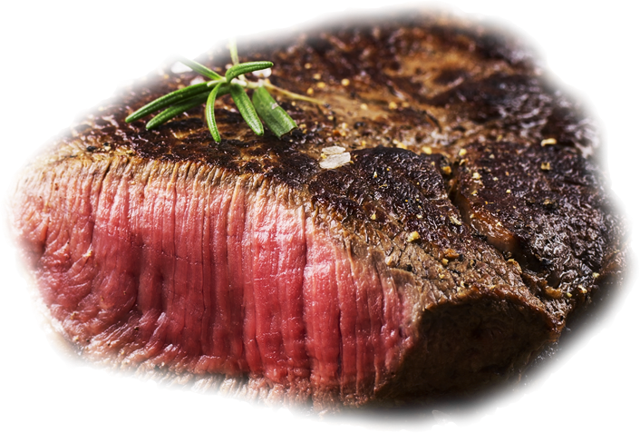

Harrisonburg, Virginia
Culinary Exploration .
A bustling college town located in the heart of the Shenandoah Valley. Known for its friendly locals and lively atmosphere, it is also home to a variety of delicious restaurants that cater to a wide range of tastes and budgets. From farm-to-table cuisine to classic Southern cooking, Harrisonburg has something to offer for everyone.
More